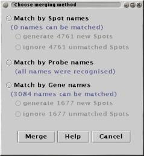

All plugins which import data offer the choice of "Replace" the current data, or "Merge" with the current data. When "Merge" is used, the Merge control panel is displayed once the data is loaded:

This panel shows how the names in the new data match with the names in the current data. Each of the three types of name (Spot, Probe and Gene) are matched separately.
The Merge control panel shows how many of names match for each of the types. One of the three type must be selected.
If some of the names in the new data do not match existing names, the choice between "generate new spots" or "ignore unmatched spots" is offered. One of these options must be chosen before the merge can proceed.
(Note: The Name Munger is useful for altering names so that merging can be performed.)
How merging works...
If the current data has five spots, named like this:
spot1and the new data contains three spots, named like this:
spot1then the merge is simple because all spots are recognised. No new spots will be created, and Spots "spot2" and "spot4" in the new Measurements will be given the value "NaN" (Not-A-Number).
If the new data instead contained the four spots:
spot1then the merge more complex because "spot7" is not recognised. If the "ignore" option has been selected, "spot7" will be discarded, otherwise a new Spot called "spot7" will be created. In the existing Measurments, "spot7" will be given the value "NaN". As before, the value for "spot2" and "spot4" will be set to "NaN" in the new Measurements.
This rule is applied to Spot, Probe and Gene name matching. When matching using Probe or Gene names, an additional rule is used to handle repeated occurences of names.
If the current data has five spots, with Probe names like this:
probeA(note that "probeA" occurs twice)
and the new data contains four spots,
with the Probe names:
then the first occurence of "probeA" in the new data will be matched with the first occurence of "probeA" in the existing data. Similarly, the second occurence of "probeA" in the new data is matched with the second occurence of "probeA" in the existing data. The third occurence of "probeA" does not match however, as there are no more "probeA"s in the existing data. This "probeA" will either be added as a new spot, or ignored depending on which merge option was selected (see above). Likewise, "probeD" does not match any existing name, it too will either become a new spot, or be ignored.
See Also: